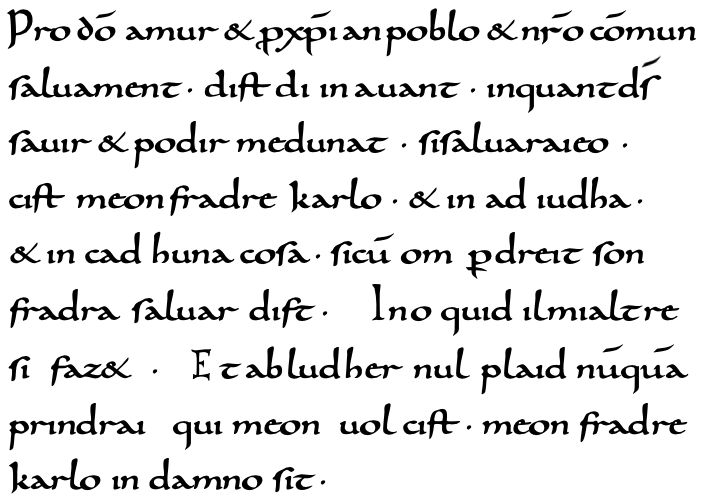
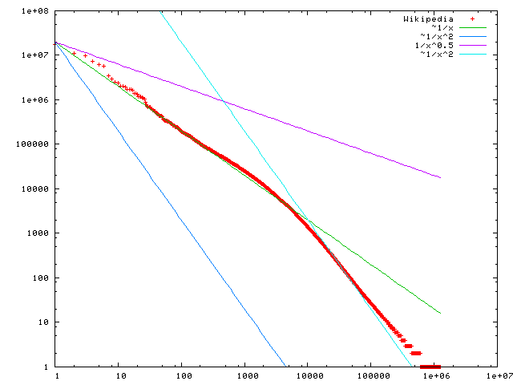
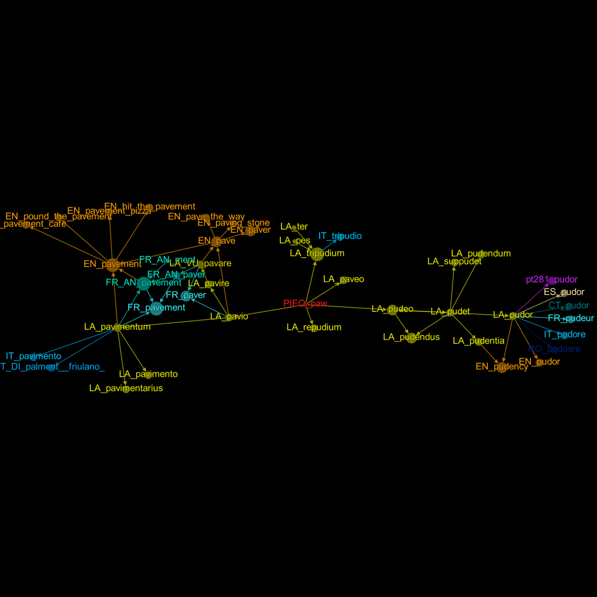
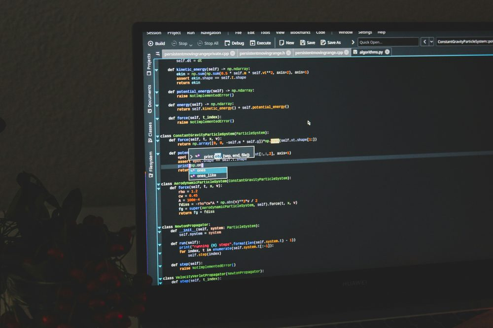

ΚΕΔΙΒΙΜ ΕΚΠΑ, ΠΡΟΓΡΑΜΜΑ 1829NKUA CENTER FOR CONTINUING EDUCATION AND LIFELONG LEARNING, PROGRAMME 1829
ΨΗΦΙΑΚΗ ΔΙΑΧΡΟΝΙΑDIGITAL DIACHRONY
Ψηφιακά Εργαλεία για τη Διαχρονική Ανάλυση της ΓλώσσαςDigital Tools for the Diachronic Analysis of Language
Επιμορφωτικό πρόγραμμα 300 ωρών, ασύγχρονο εξ αποστάσεως, για φιλολόγους, εκπαιδευτικούς και ερευνητές που θέλουν να μελετούν τη γλωσσική αλλαγή με ψηφιακά εργαλεία. A 300-hour asynchronous online programme for philologists, teachers and researchers who want to study language change with digital tools. The programme is taught in Greek.
Αιτήσεις έως 26 Οκτωβρίου 2026Έναρξη 30 Οκτωβρίου 2026 Applications close 26 October 2026Starts 30 October 2026
8
ΜΗΝΕΣMONTHS
300
ΩΡΕΣ ΕΝΑΣΧΟΛΗΣΗΣHOURS OF STUDY
5
ΔΙΔΑΚΤΙΚΕΣ ΕΝΟΤΗΤΕΣMODULES
6
ΕΠΙΠΕΔΟ EQFEQF LEVEL
Το πρόγραμμαThe programme
Το πρόγραμμα «Ψηφιακά Εργαλεία για τη Διαχρονική Ανάλυση της Γλώσσας» του Κέντρου Επιμόρφωσης και Διά Βίου Μάθησης του Εθνικού και Καποδιστριακού Πανεπιστημίου Αθηνών (ΚΕΔΙΒΙΜ ΕΚΠΑ) διδάσκει πώς μελετάται η γλωσσική αλλαγή με ψηφιακά εργαλεία και υπολογιστικές μεθόδους. Οι εκπαιδευόμενοι μαθαίνουν να μετατρέπουν ιστορικά κείμενα σε δεδομένα, να τα επισημειώνουν, να τα αναλύουν στατιστικά, να διαχειρίζονται ψηφιακά αρχεία και συλλογές και να σχεδιάζουν δικά τους ερευνητικά έργα.
Η ιδέα που διατρέχει το πρόγραμμα είναι ότι ο τρόπος με τον οποίο επισημειώνεται ένα σώμα κειμένων καθορίζει ποια ερωτήματα μπορούν να τεθούν σε αυτό. Ένα μηδενικό αντικείμενο, για παράδειγμα, στο απλό κείμενο είναι απλώς μια απουσία. Όταν κωδικοποιηθεί, γίνεται δεδομένο που μπορεί να μετρηθεί. Η εργασία γίνεται κυρίως σε πραγματικά κείμενα της ελληνικής διαχρονίας, με τη μεθοδολογία του ερευνητικού προγράμματος PROIEL και του διαχρονικού σώματος κειμένων AthDGC (Athens Digital Glossa Chronos).
Όσοι το επιθυμούν μπορούν, μετά τον ποιοτικό έλεγχο και με τη σύμφωνη γνώμη τους, να εντάξουν επισημειωμένο δείγμα της εργασίας τους στην επόμενη ανοιχτή έκδοση του σώματος AthDGC, με το όνομά τους στους συντελεστές.
ΣΕ ΠΟΙΟΥΣ ΑΠΕΥΘΥΝΕΤΑΙ
Σε κλασικούς και βυζαντινούς φιλολόγους, νεοελληνιστές και φιλολόγους της αγγλικής, της γερμανικής, της γαλλικής, της ισπανικής, της ιταλικής και άλλων ινδοευρωπαϊκών γλωσσών, σε εκπαιδευτικούς με ενδιαφέρον για ψηφιακές μεθόδους, σε μεταπτυχιακούς φοιτητές γλωσσολογίας, σε ερευνητές των ψηφιακών ανθρωπιστικών επιστημών και σε επαγγελματίες της γλωσσικής τεχνολογίας.
The programme "Digital Tools for the Diachronic Analysis of Language", offered by the Center for Continuing Education and Lifelong Learning of the National and Kapodistrian University of Athens (NKUA), teaches how language change is studied with digital tools and computational methods. Participants learn to turn historical texts into data, annotate them, analyse them statistically, manage digital archives and collections, and design research projects of their own.
The idea that runs through the programme is that the way a corpus is annotated decides which questions can be asked of it. A null object, for instance, is simply an absence in plain text. Once it is encoded, it becomes a datum that can be counted. The work is done mainly on real texts from the history of Greek, following the methodology of the PROIEL research project and of the AthDGC diachronic corpus (Athens Digital Glossa Chronos).
Participants who wish to may, after quality control and with their consent, add an annotated sample of their work to the next open release of the AthDGC corpus, with their name among the contributors.
WHO IT IS FOR
Classical and Byzantine philologists, specialists in Modern Greek, philologists of English, German, French, Spanish, Italian and other Indo-European languages, teachers interested in digital methods, postgraduate students of linguistics, researchers in the digital humanities, and language technology professionals.




Διδακτικές ενότητεςModules
-
01
Θεμέλια Διαχρονικής ΓλωσσολογίαςFoundations of Diachronic Linguistics
Οι μηχανισμοί της γλωσσικής αλλαγής, οι θεωρίες της γραμματικοποίησης και οι φωνητικές και σημασιολογικές μεταβολές, με μελέτες περίπτωσης από την ελληνική και άλλες γλώσσες. Η ενότητα εισάγει επίσης τις βασικές έννοιες της γλωσσολογίας των σωμάτων κειμένων (corpus linguistics).
The mechanisms of language change, theories of grammaticalization, and phonetic and semantic change, with case studies from Greek and other languages. The module also introduces the basic concepts of corpus linguistics.
ΥΠΟΕΝΟΤΗΤΕΣUNITS
- Εισαγωγή στη γλωσσική αλλαγή και εξέλιξη
- Μηχανισμοί φωνητικής και φωνολογικής αλλαγής
- Γραμματικοποίηση και σημασιολογική μεταβολή
- Γλωσσολογία των σωμάτων κειμένων για διαχρονική ανάλυση
- Μελέτες περίπτωσης από την ελληνική και άλλες γλώσσες
- Introduction to language change and evolution
- Mechanisms of phonetic and phonological change
- Grammaticalization and semantic change
- Corpus linguistics for diachronic analysis
- Case studies from Greek and other languages
-
02
Υπολογιστικές Μέθοδοι και ΕργαλείαComputational Methods and Tools
Προγραμματισμός σε Python και R για γλωσσική ανάλυση, επεξεργασία κειμένων με τις βιβλιοθήκες NLTK και spaCy, κανονικές εκφράσεις (regular expressions) και διαδικτυακή άντληση δεδομένων (web scraping), με πρακτική εφαρμογή σε πραγματικά γλωσσικά δεδομένα.
Programming in Python and R for linguistic analysis, text processing with the NLTK and spaCy libraries, regular expressions and web scraping, with practical work on real language data.
ΥΠΟΕΝΟΤΗΤΕΣUNITS
- Βασικές αρχές Python και δομές δεδομένων για φιλολόγους και γλωσσολόγους
- Επεξεργασία και ανάλυση κειμένων με Python
- Οι βιβλιοθήκες NLTK και spaCy για την επεξεργασία φυσικής γλώσσας
- Διαδικτυακή άντληση δεδομένων και διεπαφές προγραμματισμού εφαρμογών (API) για τη συλλογή γλωσσικών δεδομένων
- Αυτοματοποίηση ροών εργασίας για γλωσσολογικές εργασίες
- Python basics and data structures for philologists and linguists
- Text processing and analysis with Python
- The NLTK and spaCy libraries for natural language processing
- Web scraping and application programming interfaces (APIs) for collecting language data
- Automating workflows for linguistic tasks
-
03
Στατιστική Ανάλυση και ΜοντελοποίησηStatistical Analysis and Modelling
Περιγραφική στατιστική, έλεγχοι υποθέσεων και μοντέλα παλινδρόμησης για γλωσσικά φαινόμενα, μοντέλα χρονοσειρών για τη γλωσσική εξέλιξη και οπτικοποίηση δεδομένων.
Descriptive statistics, hypothesis testing and regression models for linguistic phenomena, time-series models for language change, and data visualization.
ΥΠΟΕΝΟΤΗΤΕΣUNITS
- Οπτικοποίηση με ggplot2 και matplotlib
- Περιγραφική στατιστική για γλωσσικά δεδομένα
- Έλεγχοι υποθέσεων και στατιστική ανάλυση
- Μοντέλα παλινδρόμησης για τη γλωσσική εξέλιξη
- Χρονοσειρές και ανάλυση τάσεων
- Visualization with ggplot2 and matplotlib
- Descriptive statistics for language data
- Hypothesis testing and statistical analysis
- Regression models for language change
- Time series and trend analysis
-
04
Εφαρμογές σε Ιστορικές ΓλώσσεςApplications to Historical Languages
Ψηφιακή επεξεργασία αρχαίων και μεσαιωνικών κειμένων: οπτική αναγνώριση χαρακτήρων (OCR) σε παλαιές εκδόσεις, διαχείριση του πολυτονικού, κωδικοποίηση κατά το πρότυπο TEI/XML και δημιουργία ψηφιακών κριτικών εκδόσεων.
Digital processing of ancient and medieval texts: optical character recognition (OCR) of older printed editions, handling polytonic Greek, encoding to the TEI/XML standard, and building digital critical editions.
ΥΠΟΕΝΟΤΗΤΕΣUNITS
- OCR και ψηφιοποίηση παλαιών εκδόσεων
- Διαχείριση του πολυτονικού και ιστορικών γραφών
- Κωδικοποίηση TEI/XML για κριτικές εκδόσεις
- Ανάπτυξη διαχρονικών σωμάτων κειμένων
- Εργαλεία για αρχαία και μεσαιωνικά κείμενα
- OCR and digitization of older editions
- Polytonic Greek and historical scripts
- TEI/XML encoding for critical editions
- Building diachronic corpora
- Tools for ancient and medieval texts
-
05
Ερευνητικό Εργαστήριο και Πρακτική ΆσκησηResearch Laboratory and Practical Training
Ανάπτυξη πρωτότυπου ερευνητικού έργου, δημιουργία ανοιχτού συνόλου δεδομένων (dataset) ή εργαλείου, συγγραφή επιστημονικής εργασίας και προετοιμασία της παρουσίασής της σε συνέδριο.
An original research project, an open dataset or tool, a scientific paper, and preparing its presentation at a conference.
ΥΠΟΕΝΟΤΗΤΕΣUNITS
- Σχεδιασμός ερευνητικού έργου
- Μεθοδολογία και συλλογή δεδομένων
- Ανάπτυξη ανοιχτής συλλογής γλωσσικών δεδομένων ή γλωσσικού τεχνολογικού εργαλείου
- Συγγραφή επιστημονικής εργασίας
- Παρουσίαση και διάχυση των αποτελεσμάτων
- Designing a research project
- Methodology and data collection
- Building an open collection of language data or a language technology tool
- Writing a scientific paper
- Presenting and disseminating results
Πώς λειτουργείHow it works
Η εκπαίδευση είναι ασύγχρονη εξ αποστάσεως: δεν υπάρχουν υποχρεωτικά μαθήματα σε συγκεκριμένες ώρες, και ο καθένας μελετά με τον δικό του ρυθμό μέσα στους οκτώ μήνες του κύκλου, από τις 30 Οκτωβρίου 2026 έως τις 29 Ιουνίου 2027. Οι καταγεγραμμένες διαλέξεις, τα tutorials, οι ασκήσεις και τα φόρουμ συζητήσεων βρίσκονται στην πλατφόρμα Open eClass του ΚΕΔΙΒΙΜ. Η γλώσσα του προγράμματος είναι η ελληνική.
Teaching is asynchronous and fully online: there are no compulsory classes at fixed times, and everyone studies at their own pace within the eight months of the cycle, from 30 October 2026 to 29 June 2027. Recorded lectures, tutorials, exercises and discussion forums are on the Center's Open eClass platform.
Για να συμμετάσχει κανείς αρκούν βασικές γνώσεις χειρισμού υπολογιστή, πρόσβαση στο διαδίκτυο και λογαριασμός ηλεκτρονικού ταχυδρομείου. Το πιστοποιητικό απονέμεται με την ολοκλήρωση όλου του ασύγχρονου υλικού, την επιτυχή υποβολή όλων των ασκήσεων με βαθμό τουλάχιστον 5 στα 10 και την τελική ερευνητική εργασία.
Basic computer skills, internet access and an e-mail account are all that is needed to take part. The certificate is awarded on completion of all the asynchronous material, successful submission of all exercises with a mark of at least 5 out of 10, and the final research paper.
| ΣΚΕΛΟΣCOMPONENT | ΒΑΡΟΣWEIGHT |
|---|---|
| Πρακτικές ασκήσειςPractical exercises | 40% |
| Ομαδικές εργασίες (projects) ανά ενότηταGroup projects in each module | 20% |
| Τελική ερευνητική εργασίαFinal research paper | 40% |
Πιστοποίηση και μοριοδότησηCertification and credit
- Πιστοποιητικό Εξειδικευμένης ΕπιμόρφωσηςCertificate of Specialized Trainingαπό το ΚΕΔΙΒΙΜ ΕΚΠΑissued by the NKUA Center for Continuing Education and Lifelong Learning
- Επίπεδο 6Level 6του Ευρωπαϊκού Πλαισίου Προσόντων για τη Διά Βίου Μάθησηof the European Qualifications Framework for Lifelong Learning
Σύμφωνα με την επίσημη σελίδα του, το πρόγραμμα ανταποκρίνεται στις προϋποθέσεις μοριοδότησης ως εξής:
According to the official programme page, the programme meets the requirements for credit in the following Greek public-education procedures:
- Δύο (2) μόρια σε υποψηφίους για διορισμό ως μόνιμοι εκπαιδευτικοί στη γενική εκπαίδευση, στην ειδική αγωγή και ως ειδικό εκπαιδευτικό προσωπικό, ν. 4589/2019 (ΦΕΚ 13/Α/29.1.2019).
- Δύο (2) μόρια σε υποψηφίους για διορισμό ως αναπληρωτές εκπαιδευτικοί και ειδικό εκπαιδευτικό προσωπικό μέσω του Ανώτατου Συμβουλίου Επιλογής Προσωπικού (ΑΣΕΠ), ν. 4589/2019 (ΦΕΚ 13/Α/29.1.2019).
- Δέκα (10) μόρια σε υποψηφίους για τους κλάδους εκπαιδευτικών των κατηγοριών ΤΕ και ΔΕ της γενικής εκπαίδευσης και της ειδικής αγωγής και εκπαίδευσης, ΥΑ 48190/Ε1 (ΦΕΚ 1088/Β/2.4.2019).
- Ένα (1) έως δύο (2) μόρια στην επιλογή περιφερειακών διευθυντών εκπαίδευσης, διευθυντών πρωτοβάθμιας και δευτεροβάθμιας εκπαίδευσης, προϊσταμένων των Κέντρων Διεπιστημονικής Αξιολόγησης, Συμβουλευτικής και Υποστήριξης, συμβούλων εκπαίδευσης και διευθυντών ή προϊσταμένων των τμημάτων εκπαιδευτικών θεμάτων, ν. 4823/2021 (ΦΕΚ 136/Α/3.8.2021).
- Two (2) points for candidates for permanent teaching posts in general education and special education, and as special educational staff, Law 4589/2019 (Government Gazette 13/A/29.1.2019).
- Two (2) points for candidates for substitute teaching posts and special educational staff through the Supreme Council for Civil Personnel Selection (ASEP), Law 4589/2019 (Government Gazette 13/A/29.1.2019).
- Ten (10) points for candidates in the TE and DE categories of teaching staff in general and special education, Ministerial Decision 48190/E1 (Government Gazette 1088/B/2.4.2019).
- One (1) to two (2) points in the selection of regional education directors, directors of primary and secondary education, heads of the Centres for Interdisciplinary Assessment, Counselling and Support, education advisers and heads of educational affairs departments, Law 4823/2021 (Government Gazette 136/A/3.8.2021).
Τέλη και αίτησηFees and application
Τα τέλη παρακολούθησης είναι 500 € και καταβάλλονται σε έως 4 δόσεις. Με εφάπαξ πληρωμή το ποσό είναι 475 €. Ο πίνακας δείχνει τις κατηγορίες μερικής απαλλαγής όπως αναγράφονται στην επίσημη σελίδα του προγράμματος.
The fee is 500 €, payable in up to 4 instalments. Paid in a single instalment, it is 475 €. The table shows the categories of partial fee waiver as listed on the official programme page.
| ΚΑΤΗΓΟΡΙΑCATEGORY | ΕΚΠΤΩΣΗREDUCTION | ΤΕΛΗFEE | ΕΦΑΠΑΞSINGLE |
|---|---|---|---|
| Άτομα με ειδικές ανάγκεςPersons with disabilities | 50% | 250 € | 238 € |
| Άνεργοι, γονείς τέκνων με ειδικές ανάγκες, άτομα με ετήσιο εισόδημα κάτω από 12.000 €Unemployed persons, parents of children with disabilities, annual income below 12,000 € | 30% | 350 € | 333 € |
| Πρόσφυγες και μετανάστεςRefugees and migrants | 25% | 375 € | 356 € |
| Κάτοικοι περιοχών που έχουν κηρυχθεί σε κατάσταση έκτακτης ανάγκης λόγω φυσικών καταστροφών, εκπαιδευόμενοι που έχουν παρακολουθήσει ή παρακολουθούν επιμορφωτικό πρόγραμμα του ΕΚΠΑResidents of areas declared in a state of emergency after natural disasters; past or current participants in an NKUA training programme | 20% | 400 € | 380 € |
| Απόφοιτοι τριτοβάθμιας εκπαίδευσης σχολών Παιδαγωγικών, Ανθρωπιστικών και Θετικών Επιστημών και κάτοχοι διδακτικής/παιδαγωγικής επάρκειας, υπάλληλοι του δημόσιου τομέαGraduates of schools of education, the humanities or the sciences and holders of a teaching or pedagogical qualification, public-sector employees | 15% | 425 € | 404 € |
| Γονείς μονογονεϊκών οικογενειών με ετήσιο εισόδημα κάτω από 15.000 €Single parents with annual income below 15,000 € | 10% | 450 € | 428 € |
| Άτομα ηλικίας άνω των 65 ετώνPersons over 65 | 5% | 475 € | 451 € |
Για τα δικαιολογητικά κάθε κατηγορίας απευθυνθείτε στη Γραμματεία του ΚΕΔΙΒΙΜ. Για κάθε λεπτομέρεια ισχύει η επίσημη σελίδα του προγράμματος.
For the documents each category requires, contact the Center's secretariat. The official programme page governs every detail.
Η αίτηση σε τρία βήματαApplying in three steps
- Ανοίξτε την επίσημη σελίδα του προγράμματος στο ΚΕΔΙΒΙΜ ΕΚΠΑ και πατήστε «Κάνε Αίτηση».
- Επιλέξτε τον «1ο Κύκλο». Θα μεταφερθείτε στην Κυβέλη, την πλατφόρμα εκπαιδευομένων του ΚΕΔΙΒΙΜ.
- Συνδεθείτε στον λογαριασμό σας στην Κυβέλη ή δημιουργήστε νέο και ολοκληρώστε την αίτηση. Οδηγίες για τη δημιουργία λογαριασμού και τη σύνδεση υπάρχουν στην αρχική σελίδα της Κυβέλης.
- Open the official programme page at the NKUA Center for Continuing Education and Lifelong Learning and select "Apply".
- Choose the 1st cycle. You will be taken to Cybele, the Center's learner platform.
- Log in to your Cybele account or create a new one, and complete the application. Instructions for creating an account and logging in are on the Cybele home page.
Ο Οδηγός Αίτησης (PDF) συγκεντρώνει τα βήματα, τα τέλη και τις επαφές σε ένα έντυπο.
The Application Guide (PDF, in Greek) brings the steps, fees and contacts together in one document.
Συχνές ερωτήσειςFrequently asked questions
Χρειάζομαι γνώσεις προγραμματισμού;
Όχι. Το πρόγραμμα δεν προϋποθέτει προηγούμενη εμπειρία στον προγραμματισμό. Η Python διδάσκεται από τις βασικές αρχές της στη δεύτερη διδακτική ενότητα.
Πόσο χρόνο χρειάζεται την εβδομάδα;
Οι 300 ώρες κατανέμονται σε οκτώ μήνες, δηλαδή περίπου 35 εβδομάδες. Κατά μέσο όρο αυτό αντιστοιχεί σε 8 έως 9 ώρες την εβδομάδα.
Τι υπολογιστή και λογισμικό χρειάζομαι;
Έναν υπολογιστή με Windows, macOS ή Linux και σύνδεση στο διαδίκτυο. Τα βασικά εργαλεία του προγράμματος, όπως η Python, η R, το NLTK και το spaCy, είναι ελεύθερο λογισμικό και διατίθενται δωρεάν. Οδηγίες εγκατάστασης δίνονται στην πλατφόρμα του προγράμματος.
Είναι κατάλληλο για φιλολόγους ξένων γλωσσών;
Ναι. Οι μελέτες περίπτωσης προέρχονται από την ελληνική και από άλλες γλώσσες, και τα εργαλεία που διδάσκονται, από την Python και το spaCy έως το πρότυπο TEI/XML, χρησιμοποιούνται για κείμενα σε πολλές γλώσσες.
Do I need programming experience?
No. The programme does not assume any previous programming experience. Python is taught from first principles in the second module.
How much time does it take each week?
The 300 hours are spread over eight months, about 35 weeks. On average this comes to 8 to 9 hours a week.
What computer and software do I need?
A computer running Windows, macOS or Linux, and an internet connection. The main tools of the programme, such as Python, R, NLTK and spaCy, are free and open-source software. Installation instructions are provided on the programme platform.
Is it suitable for philologists of other languages?
Yes. Case studies come from Greek and from other languages, and the tools taught, from Python and spaCy to the TEI/XML standard, are used for texts in many languages.
Οδηγοί και ιστολόγιοGuides and blog
Οδηγοί σε PDFGuides in PDF
Ο Ενημερωτικός Οδηγός Σπουδών, ο Οδηγός Αίτησης και ένα μονοσέλιδο ενημερωτικό φυλλάδιο για εκτύπωση ή αποστολή.
The Study Guide, the Application Guide, and a one-page leaflet for printing or sharing. All are in Greek.
ΟΛΟΙ ΟΙ ΟΔΗΓΟΙALL GUIDESΙστολόγιοBlog
Ανακοινώσεις του προγράμματος και σύντομα κείμενα για τις μεθόδους που διδάσκονται.
Programme announcements and short pieces on the methods taught. Posts are in Greek.
ΟΛΕΣ ΟΙ ΑΝΑΡΤΗΣΕΙΣALL POSTS